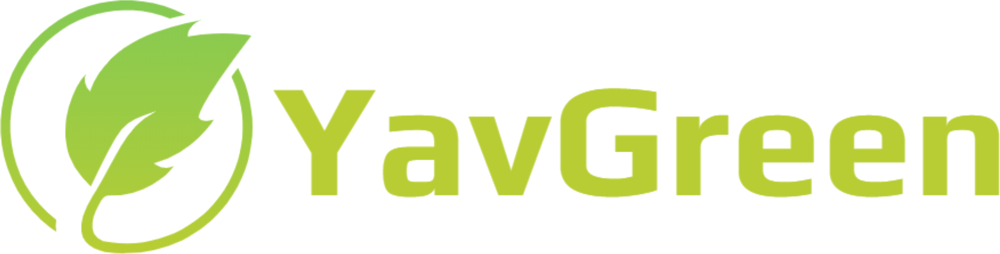

<ion-header>
  <ion-toolbar color="yav1">
    <ion-buttons slot="start">
      <ion-menu-button></ion-menu-button>
    </ion-buttons>
    <ion-title>
      
    </ion-title>
  </ion-toolbar>
</ion-header>

<ion-content color="yav1">
  <ion-card class="welcome-card" color="yav2">
    
    <ion-card-header>
      <ion-card-title id="texto" style="color:#B8CD33;">Bienvenido a YavGreen</ion-card-title>
      <ion-card-subtitle>Aquí podras encontrar información y noticias ecológicas</ion-card-subtitle>
    </ion-card-header>
    <ion-card-content>
      <p class="lead my-3">¡No te olvides de revisar los eventos que tenemos par tí!</p>
    </ion-card-content>
  </ion-card>
</ion-content>